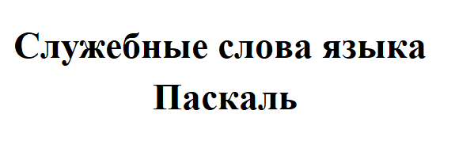

| Общие сведения о языке программирования Паскаль | |||||||||||||||||||
Интерфейс системы программирования PascalABC.NETСправочные сведения об элементах интерфейса среды программирования PascalABC.NET. Алфавит и словарь языкаОсновой языка программирования Паскаль, как и любого другого языка, является алфавит — набор допустимых символов, которые можно использовать для записи программы. Это:
В качестве неделимых элементов (составных символов) рассматриваются следующие последовательности символов:
В языке существует также некоторое количество различных цепочек символов, рассматриваемых как единые смысловые элементы с фиксированным значением. Такие цепочки символов называются служебными словами. Вы можете ознакомиться с GIF-анимацией, на которой приведены основные служебные слова, которые мы будем использовать при записи программ на языке Паскаль.  Типы данных, используемые в языке ПаскальВ языке Паскаль используются различные типы данных. Мы будем пользоваться некоторыми из так называемых простых типов данных
Структура программы на языке ПаскальВ программе, записанной на языке Паскаль, можно выделить:
Ниже приведён общий вид программы: program <имя программы>; В этом коротком интерактивном видео мы разберем структуру программы на языке Pascal Ссылка для просмотра видеоролика на сервисе "УДОБА" |